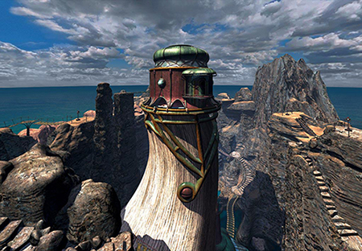
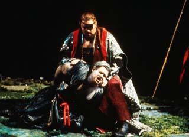

La rejouabilité, partie 1 : la narration
L'article original est écrit par Ernest Adams publié par Gamasutra (mai 2001).
L'auteur original n'est en aucun cas reponsable de la précision de cette traduction.
Qu'est-ce qui fait qu'un jeu est rejouable ? Et pourquoi certains jeux sont rejouables alors que d'autres non ?

En principe, n'importe quel jeu devrait être rejouable. Imaginons que vous alliez au magasin de jouets, que vous achetiez un jeu de société pour vingt ou trente dollars et qu'une fois arrivé chez vous, vous vous rendiez compte que vous ne pouvez y jouer qu'une seule fois : vous seriez légitimement furieux. Pourtant, ceci arrive assez souvent avec les jeux vidéo et nos clients s'y sont plus ou moins résignés. La rejouabilité, cependant, n'est pas le résultat du hasard : il s'agit de quelque chose que nous concepteurs pouvons créer volontairement… si nous le souhaitons.
Commençons par nous demander si nous le souhaitons. D'un point de vue purement vénal, la rejouabilité n'est pas toujours une bonne chose. Si un jeu est rejouable à l'infini, nos clients n'ont pas de raison d'aller en acheter d'autres. Nous avons besoin qu'ils achètent de nouveaux jeux pour que nous ayons du travail, nous avons donc une motivation financière à concevoir des jeux avec une durée de vie finie. Néanmoins, je ne connais aucun développeur qui pense réellement de cette façon. En premier lieu, la plupart des jeux ont une durée de vie finie en raison de la progression galopante de la technologie : il n'y a pas besoin de limiter artificiellement la durée de vie quand Intel et AMD font tout leur possible pour que nos jeux deviennent obsolètes au bout de quelques années, quoi que nous fassions. Mais, plus important encore, la majeure partie d'entre nous a une certaine fierté créative. Nous voulons que les gens continuent de jouer à nos jeux pendant longtemps. Nous avons du respect pour les jeux comme Civilization et Myst, auxquels les gens continuent de jouer pendant des années et nous respectons leurs créateurs pour avoir réussi une telle prouesse.
Supposons maintenant que nous voulons créer un jeu rejouable, quels sont les éléments qui influent sur la rejouabilité ? Si on laisse de côté la technologie, que l'on ne peut pas contrôler, comment peut-on concevoir un jeu rejouable ? Dans la première partie de cet article, je m'intéresserai à l'impact de la narration sur les jeux et dans un second temps, j'examinerai celui des mécaniques de jeu.
La narration dans les jeux — c'est-à-dire l'histoire, quand il y en a une — a une nette tendance à la rigidité et la linéarité. Malgré 25 et quelques années de recherches au petit bonheur, personne n'a vraiment conçu d'histoire « à embranchements » pleinement satisfaisante. Quand les gens rejouent à un jeu pour voir les embranchements qu'ils ont manqués la première fois, ils ont tendance à passer le plus vite possible les parties qu'ils ont déjà vues sans faire très attention. Et si la narration est linéaire, comme dans Starcraft ou Diablo, une fois que vous connaissez l'histoire, celle-ci ne fournit plus une très grande motivation pour refaire le jeu. Heureusement, ces jeux proposent un gameplay suffisamment intéressant pour valoir la peine d'être refaits, même en connaissant déjà l'histoire. Mais pour les jeux d'aventure, l'histoire est la principale raison de jouer. Une fois que vous avez résolu toutes les énigmes et que vous connaissez toute l'histoire, il n'y a plus beaucoup de raisons d'y rejouer. Plus la narration est importante dans un jeu, moins vous êtes incités à y rejouer.
Mais je pense qu'on peut faire les choses différemment.

Si vous vous rendez à la pointe à l'extrême nord de l'Écosse, là où les macareux nichent dans les falaises et où la brume glisse sur l'herbe même au plus fort de l'été, vous pourrez voir au nord, au-delà des eaux traîtresses du détroit de Pentland, un archipel nu : les Orcades.
Et si vous prenez le ferry pour vous y rendre, vous pourrez visiter des dizaines d'anciens monuments de pierre laissés là par des gens plus hardis que nous : des fermiers du Néolithique, des Pictes, des Vikings. Parmi ces monuments se trouve un petit village incroyablement préservé, Skara Brae, où tous les murs, les sols et même le mobilier sont faits de pierres plates. Aujourd'hui, on peut se tenir au sommet des murs, se pencher pour regarder à travers les pièces sans plafond les lits, les étagères et les armoires intégralement faits de pierres et essayer d'imaginer à quoi pouvait y ressembler la vie dans les ténèbres glacées d'une nuit d'hiver au bord de la mer du Nord, il y a cinq mille ans. Des gens vêtus de peaux, blottis autour du feu au milieu d'une obscurité puante, brûlant tout le bois flotté qu'ils ont pu trouver, la seule lumière venant du foyer.
Que faisaient-ils pendant ces hivers interminables ? Ils travaillaient, sans doute : ils cuisinaient, cousaient, s'occupaient des enfants et réparaient les outils. Ils jouaient, sans doute : ils chantaient, ils parlaient, ils plaisantaient et ils riaient. Ils faisaient ce que les humains font : ils mangeaient et dormaient, faisaient l'amour et donnaient naissance, tombaient malades et mourraient. Et tout du long, un fil fait le lien entre ces générations : raconter des histoires et les entendre raconter.
De nos jours, nous disposons de tellement d'histoires que quelqu'un pourrait passer sa vie entière à lire, à regarder la télévision, à aller au cinéma toute la journée et chaque jour, et ne jamais entendre deux fois la même. Mais dans les temps anciens, les histoires étaient moins nombreuses et se transmettaient par la parole et non par l'écriture. Le récit était peut-être la spécialité d'un petit groupe ou même d'une seule personne : le barde ou le chanteur. Et arrivée à un âge avancé — disons cinquante ans pour une femme, si elle avait survécu à l'accouchement — une personne avait dû entendre le même récit une bonne centaine de fois.
Pourquoi les gens de cette époque prenaient-ils cette peine ? D'où venait leur intérêt ? Était-ce parce que n'importe quelle histoire, qu'importe le nombre de répétitions, valait toujours mieux que pas d'histoire du tout ? J'en doute. Le silence, c'est la promesse de toutes les histoires, bonnes et mauvaises, et quand on raconte, l'une de ces possibilités devient réelle. Le silence reste préférable à une mauvaise histoire racontée à nouveau. Je pense que la raison pour laquelle nos ancêtres écoutaient encore et encore les mêmes histoires, c'est qu'il s'agissait de bonnes histoires.
Avec tant de récits parmi lesquels choisir, nous pensons aujourd'hui qu'une fois l'intrigue connue, ce n'est plus la peine de réécouter. C'est vrai de beaucoup d'histoires : est-ce qu'il y a quelconque intérêt à revoir un épisode de Kojak ou de 21 Jump Street ? Probablement pas. Mais il y a un petit nombre d'histoires que nous regardons, écoutons ou lisons encore et encore. Nous ressortons A Christmas Carol année après année, et même si le personnage du petit Tim est trop sucré pour notre goût moderne, l'histoire de la rédemption d'un vieil homme amer ne l'est pas.
Je relis habituellement le Seigneur des Anneaux ou des passages de celui-ci tous les dix-huit mois environ. Je le connais sur le bout des doigts. Je sais que je n'apprendrai rien de nouveau sur l'intrigue. Ce qui m'y ramène régulièrement, ce qui retient mon attention, ce n'est pas l'histoire, mais la narration.
Examinons la phrase suivante tirée de la fin du livre. Elle apparaît dans l'avant-dernière scène, lorsque Frodon se tient au bord de la Crevasse du Destin avec l'Anneau dans sa main. Le Prince Sombre réalise soudain sa présence et comprend que son existence-même ne tient qu'à un fil [NDT : la traduction est maison, mais je la remplacerai dès que j'aurai remis la main sur mon exemplaire du Seigneur des Anneaux.].
From all his policies and webs of fear and treachery, from all his stratagems and wars his mind shook free; and throughout his realm a tremor ran, his slaves quailed, and his armies halted, and his captains suddenly steerless, bereft of will, wavered and despaired.
De toutes ses intrigues et de ses rets de peur et de tromperie, de tous ses stratagèmes et de ses guerres, son esprit [celui de Frodon] se libéra ; et un tremblement parcourut tout son royaume, et ses esclaves fléchirent, et ses armées s'arrêtèrent, et ses capitaines soudain sans guide, privés de volonté, vacillèrent et se mirent à désespérer.
Si on la lit à haute voix, il apparaît que cette phrase est construite comme un poème [NDT : la poésie anglaise est basée sur l'alternance réglée de syllabes longues et courtes, comme la poésie latine ou la poésie grecque, de façon à former différents types de vers. Elle n'est généralement pas rimée.]. Les deux premiers blocs de la phrase ont une construction parallèle et en fait, il s'agit respectivement d'un heptamètre iambique et d'un hexamètre iambique :
From all / his pol- / i-cies / and webs / of fear / and trea- / cher-y
From all / his stra- / ta-gems / and wars / his mind / shook free
Ils riment, même. Le bloc suivant ressemble à un vers allitératif anglo-saxon, où les consonnes initiales sont répétées.
and throughout his realm / a tremor ran
Et à l'exception du mot « and », il est aussi composé d'iambes.
through-out / his realm / a tre- / mor ran
Puis nous revenons à une construction parallèle avec « his slaves quailed, and his armies halted ». Après cela, le rythme commence à se briser, exactement de la même façon que le monde guerrier et mécanique du Prince Sombre s'effondre. Est-ce que Tolkien a fait ceci de façon délibérée ? On ne peut pas savoir, mais c'était un poète qui savait tout ce qu'il y a à savoir sur la langue anglaise et, consciemment ou inconsciemment, son esprit a utilisé cette connaissance pour travailler ces phrases. À un moment de l'histoire où seule la poésie pouvait rendre justice à sa vision, il y en a employé les méthodes avec succès. C'est l'une des phrases les plus puissantes du livre, mais c'est aussi l'une de celles que vous ne remarquerez qu'à la deuxième, la troisième ou même la douzième lecture.
Raconter une bonne histoire
Pour pouvoir apprécier une histoire, il n'est pas nécessaire qu'elle soit nouvelle. On peut aller à l'opéra en connaissant toute l'intrigue et effectivement, les intrigues de la plupart des opéras sont plutôt légères. Ces œuvres se concentrent sur la performance, la puissance et la beauté de la voix humaine. Pourquoi a-t-on vu des adolescentes retourner voir Titanic encore et encore et encore, alors qu'elles en connaissaient déjà l'intrigue ? C'est en raison de l'émotion que le film leur inspire et celle ne repose pas que sur l'intrigue, mais aussi sur la façon de raconter.
Il y a un certain temps, j'ai commencé à me poser des questions sur les comic books : leurs histoires se poursuivent indéfiniment sans que les héros ou les méchants ne vieillissent et pratiquement sans qu'aucun d'entre eux ne meure. Ils essuient des échecs de temps à autre, mais ces changements sont rarement permanents. Les histoires sont présentées comme si elles faisaient partie d'une continuité narrative, mais bien sûr, cela n'aurait aucun sens : cela voudrait dire que Batman, un être humain ordinaire, a combattu le crime en continu pendant près de 70 ans [NDT : en slip, en plus]. À quelle catégorie de littérature appartiennent donc les comics ? Finalement, j'ai conclu que ce ne sont ni des romans, ni des serials, ni des soaps, mais des légendes. Les légendes n'ont pas besoin de continuité pour former un tout cohérent. Il peut y avoir une infinité d'histoires sur Paul Bunyan et celui-ci ne vieillit jamais ni ne meurt, parce que chacune de ces histoires se suffit à elle-même.
Les éditeurs de comic books ont peur de tuer un personnage, de peur que les gens pensent qu'il va rester mort éternellement. Ils inventent des histoires pour raconter les origines et les aventures de leurs personnages, mais ils ne disent pas comment ils meurent. Ils sont encore bloqués sur l'idée que les livres sont forcément des narrations continues. Du moins, ils l'étaient jusqu'en 1986.
En 1986, Frank Miller a écrit un roman graphique intitulé The Dark Knight Returns. Dans ce livre, il a raconté le combat final de Batman et sa fin. Il a reconnu que les lecteurs de comic books ne sont pas nécessairement des enfants, qu'ils sont suffisamment matures pour pouvoir lire l'histoire de la mort de Batman sans en déduire que la publication d'autres de ses aventures va cesser. Dans sa préface pour le livre, Alan Moore a écrit :
Toutes nos meilleurs et nos plus anciennes légendes reconnaissent le passage du temps, le vieillissement et la mort des êtres. La légende de Robin des Bois ne pourrait être complète sans cette dernière flèche tirée à l'aveugle pour déterminer l'emplacement de sa tombe. Les légendes nordiques perdraient beaucoup de leur pouvoir sans l'idée du Ragnarok final, de même que l'histoire de Davy Crockett sans Alamo.
En montrant la fin de la légende de Batman, Miller n'a rien enlevé et n'a rien fait qui puisse empêcher la création de nouvelles légendes. Il lui a simplement donné une fin adéquate, sans laquelle elle restait incomplète.
Une autre chose à propos des légendes, c'est qu'elles n'ont pas besoin d'être cohérentes. Nous savons qu'il s'agit de fictions et non de faits. Il n'y aucune raison pour laquelle une version particulière du destin de Batman serait la bonne. Lorsqu'il a composé l'Anneau du Nibelung, Richard Wagner a profondément réécrit les légendes nordiques pour ses propres besoins, et bien que son œuvre ne soit pas fidèle au matériau d'origine, ce matériau n'est de toute façon pas vraiment fidèle à quoi que ce soit. Wagner travaillait à partir de copies de légendes écrites au Moyen-Âge, par des auteurs qui devaient eux-mêmes choisir de consigner une version particulière de contes bien plus ancien. Pour prendre un exemple plus récent, l'auteur John Fowles était incapable de se décider pour une fin à son livre Sarah et le lieutenant français, il décida donc sans regret de créer deux fins différentes et de les raconter toutes deux [NDT : en réalité, le livre a trois fins.].
Il s'agit, je crois, des clefs qui permettent de faire d'un jeu narratif un jeu rejouable. En premier lieu, si l'histoire est linéaire, elle doit être si bien construite qu'elle doit être intéressante à revoir et revoir encore, même si nous en connaissons l'intrigue. Il faut faire comme Tolkien , et écrire avec soin ; faire comme l'opéra et mettre en scène avec soin ; faire comme Titanic l'a fait et créer une émotion qui dépasse l'intrigue seule. Raconter l'histoire comme l'aurait fait un barde de l'âge de pierre lors d'une nuit d'hiver dans la mer du Nord, de façon si fascinante que le public peut l'entendre une centaine de fois sans s'en lasser. C'est beaucoup demander, mais cela peut être fait si nous y mettons le talent et le travail nécessaires.

Ensuite, nous devons traiter nos histoires non pas comme des accumulations immuables de faits qui rendraient compte d'une « histoire » qui n'est jamais survenue, mais comme des légendes qui parlent de héros courageux, de grands évènements et de hauts faits. Certaines personnes ont déversé des litres d'encre à se prendre le bec pour d'infimes incohérences dans l'univers de Star Trek ; quelques décennies plutôt, c'était la même chose pour les histoires de Sherlock Holmes. C'est parce que ces personnes traitent ces mondes fictionnels comme une réalité objective. Il n'y a pas de mal à les laisser apprécier ces univers à leur façon, mais nous devrions nous garder de faire la même chose. Pour nous concepteurs, nous attacher à une seule version des évènements dans les univers que nous créons, c'est nous lier les mains et rendre la rejouabilité beaucoup plus difficile. Rejouer à un jeu crée des variations, et les variations exigent que les mécaniques de narration soient plus tolérantes. Nous voulons des histoires, pas « une vérité ».
Ajouter un commentaire
Commentaires

"[celui de Frodon]"---> celui de Sauron Et sinon évidemment qu'il l'a écrit consciemment. Nombre de ses textes sur la Terre Du Milieu sont écrits en vers.
Très bon article, lu du début à la fin !

Dans la citation du Seigneur des Anneaux, tu dis "[celui de Frodon]" mais il me semble que c'est plutôt celui de Sauron ?
Très bonne traduction d'un excellent article, comme d'hab' ! Ça fait plaisir de revoir du contenu sur la Forge. :)